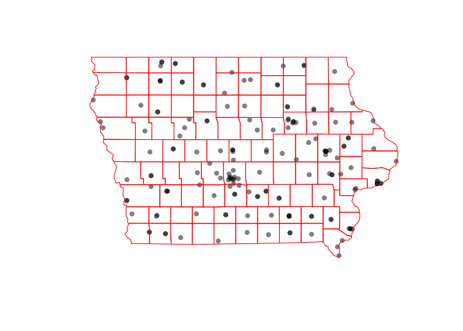
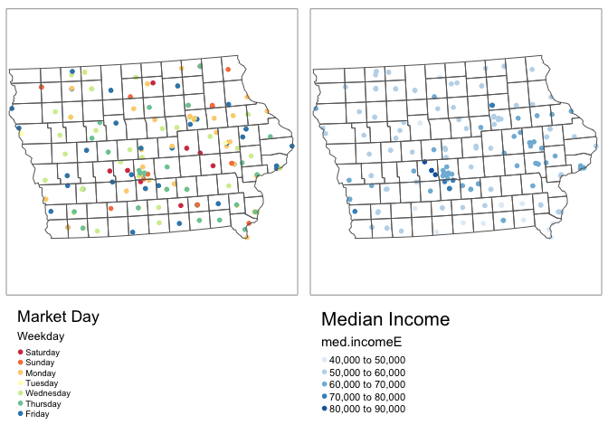
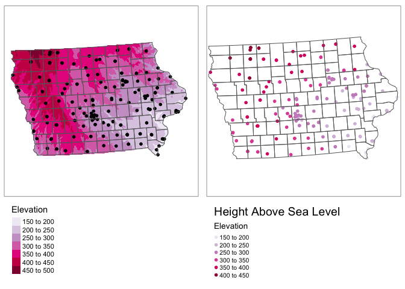
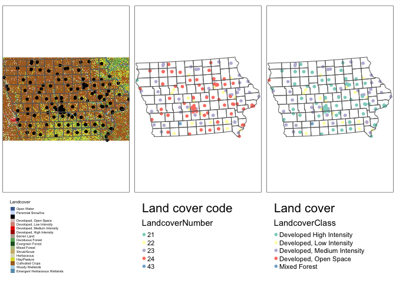

library(sp)
library(sf)
library(elevatr)
library(USAboundaries)
library(raster)
library(tidycensus)
library(rnaturalearth)
library(tmap)
library(exactextractr)
library(units)
library(tigris)
library(rmapshaper)
library(FedData)I am basing my examples on Iowan farmers market locations
plot(st_geometry(IA_farmersmarket.sf),col=rgb(0,0,0,.5),pch=16)
plot(st_geometry(border.county.IA.sf),border="red",add=TRUE)
Make sure your data is in sf format! Now there are a few options. You could filter to one of the columns and crop that way. For my data I have these columns
names(IA_farmersmarket.sf)## [1] "FID" "City" "County" "Latitude" "Location"
## [6] "Longitude" "Market_Name" "Open_Dates" "Open_Hours" "State"
## [11] "Weekday" "geometry"So for example
# THE COMMA AT THE END IS IMPORTANT!
IA_farmersmarket.MONDAY.sf <- IA_farmersmarket.sf[which(IA_farmersmarket.sf$Weekday %in% "Monday"), ]
#or
central_lat <-mean(IA_farmersmarket.sf$Latitude,na.rm=TRUE)
IA_farmersmarket.SOUTH.sf <- IA_farmersmarket.sf[which(IA_farmersmarket.sf$Latitude < central_lat), ]
#or
IA_farmersmarket.UIOWA.sf <- IA_farmersmarket.sf[which(IA_farmersmarket.sf$County %in% c("LINN","JOHNSON")), ]
map1 <- qtm(st_geometry(border.county.IA.sf),fill="white")+
tm_shape(IA_farmersmarket.sf)+tm_dots(size=.1,col="black")
map2 <- qtm(st_geometry(border.county.IA.sf),fill="white")+
tm_shape(IA_farmersmarket.MONDAY.sf)+tm_dots(size=.1,col="red")
map3 <- qtm(st_geometry(border.county.IA.sf),fill="white")+
tm_shape(IA_farmersmarket.SOUTH.sf)+tm_dots(size=.1,col="red")
map4 <- qtm(st_geometry(border.county.IA.sf),fill="white")+
tm_shape(IA_farmersmarket.UIOWA.sf)+tm_dots(size=.1,col="red")
tmap_arrange(map1,map2,map3,map4)rm(map1);rm(map2);rm(map3);rm(map4)Ocean folks, this one is for you!
# Make sure your sf data is in lon/lat
IA_farmersmarket.sf <- st_transform(IA_farmersmarket.sf,4326)
# Turn it into sp data
IA_farmersmarket.sp <- as(IA_farmersmarket.sf,"Spatial")
# My new region from https://www.geoplaner.com/
Crop.Region <- as(extent(-94,-92,41,42), "SpatialPolygons")
# Subset the polygons to my new region
IA_farmersmarket.BOX.sp <- crop(IA_farmersmarket.sp, Crop.Region, byid=TRUE)
# and convert back to sf and your other map projection
IA_farmersmarket.BOX.sf <- st_as_sf(IA_farmersmarket.BOX.sp)
IA_farmersmarket.sf <- st_transform(IA_farmersmarket.sf,3744)
IA_farmersmarket.BOX.sf <- st_transform(IA_farmersmarket.BOX.sf,3744)
# and plot
map1 <- qtm(st_geometry(border.county.IA.sf),fill="white")+
tm_shape(IA_farmersmarket.sf)+tm_dots(size=.1,col="black")
map2 <- qtm(st_geometry(border.county.IA.sf),fill="white")+
tm_shape(IA_farmersmarket.BOX.sf)+tm_dots(size=.1,col="red")
# tell R the bounding box
mybox <- st_bbox(IA_farmersmarket.BOX.sf)
map3 <- qtm(st_geometry(border.county.IA.sf),fill="white",bb=mybox)+
tm_shape(IA_farmersmarket.BOX.sf)+tm_dots(size=.1,col="red")
tmap_arrange(map2,map1,map3)rm(map1);rm(map2);rm(map3)Sometimes we want to crop to a state/shapefile. For example imagine we want to crop to a city metropoliton area (see Lab 7)
# This could be any sf boundary you want to crop to.
# it doesn't have to be a city - here i look for Des Moines
pl <- places(state = "IA", cb = TRUE, year=2017)##
|
| | 0%
|
|= | 2%
|
|== | 3%
|
|==== | 6%
|
|===== | 7%
|
|====== | 8%
|
|======= | 10%
|
|======== | 11%
|
|========= | 12%
|
|========== | 14%
|
|=========== | 16%
|
|============ | 18%
|
|============== | 19%
|
|============== | 20%
|
|=============== | 21%
|
|================ | 23%
|
|================= | 24%
|
|================= | 25%
|
|=================== | 27%
|
|==================== | 29%
|
|===================== | 30%
|
|====================== | 32%
|
|======================= | 33%
|
|======================== | 34%
|
|========================= | 35%
|
|========================= | 36%
|
|=========================== | 39%
|
|============================= | 42%
|
|============================== | 43%
|
|================================== | 49%
|
|=================================== | 50%
|
|==================================== | 51%
|
|===================================== | 53%
|
|========================================= | 58%
|
|========================================== | 60%
|
|============================================= | 64%
|
|=================================================== | 72%
|
|===================================================== | 76%
|
|======================================================== | 80%
|
|=========================================================== | 84%
|
|============================================================== | 88%
|
|================================================================= | 92%
|
|=================================================================== | 96%
|
|======================================================================| 100%DesMoines.borders.sf <- dplyr::filter(pl, NAME == "Des Moines")
# make sure they are the same map projection
IA_farmersmarket.sf <- st_transform(IA_farmersmarket.sf,4326)
DesMoines.borders.sf <- st_transform(DesMoines.borders.sf,4326)
# and crop and save to a new thing
DesMoines.Markets.sf <- ms_clip(target = IA_farmersmarket.sf, clip = DesMoines.borders.sf, remove_slivers = TRUE)
# change the map projection back
IA_farmersmarket.sf <- st_transform(IA_farmersmarket.sf,3744)
DesMoines.borders.sf <- st_transform(DesMoines.borders.sf,3744)
DesMoines.Markets.sf <- st_transform(DesMoines.Markets.sf,3744)
# and plot
map1 <- qtm(st_geometry(border.county.IA.sf),fill="white")+
tm_shape(IA_farmersmarket.sf)+tm_dots(size=.05,col="black")+
tm_shape(DesMoines.borders.sf)+tm_borders()+
tm_shape(DesMoines.Markets.sf)+tm_dots(size=.05,col="red")
map2 <- qtm(st_geometry(DesMoines.borders.sf),fill="white")+
tm_shape(DesMoines.Markets.sf)+tm_dots(size=.1,col="red")
tmap_arrange(map1,map2)rm(map1);rm(map2)library(sp)
library(sf)
library(elevatr)
library(USAboundaries)
library(raster)
library(tidycensus)
library(rnaturalearth)
library(tmap)
library(exactextractr)
library(units)
library(tigris)
library(rmapshaper)
library(FedData)HiNT! IF IN DOUBT, TRANSFORM EVERYTHING INTO LONG/LAT MAP PROJECTION (4326) - and merge like that, then transform back to the one you want.
I am going to extract some data to add to my Iowan Farm Market Locations:
This is very easy using the st_join() command from the sf package. To add my census data (or any sf polygon data) to my Iowa farmers market sf, I can simply do
#--------------------------------------------------------------
# Transform all to lon/lat crs=4326 - just in case
#--------------------------------------------------------------
ACS_county.sf <- st_transform(ACS_county.sf,4326)
IA_farmersmarket.sf <- st_transform(IA_farmersmarket.sf,4326)
#--------------------------------------------------------------
# MAKE SURE THE POINT DATA GOES FIRST
# I'm calling it something new so I dont accidentally overwrite
#--------------------------------------------------------------
IA_farmers_census.sf <- st_join(IA_farmersmarket.sf,ACS_county.sf)
#--------------------------------------------------------------
# Transform back
#--------------------------------------------------------------
ACS_county.sf <- st_transform(ACS_county.sf,3744)
IA_farmersmarket.sf <- st_transform(IA_farmersmarket.sf,3744)
IA_farmers_census.sf <- st_transform(IA_farmers_census.sf,3744)
#--------------------------------------------------------------
# Have a look at your new column names
#--------------------------------------------------------------
names(IA_farmers_census.sf)## [1] "FID" "City" "County"
## [4] "Latitude" "Location" "Longitude"
## [7] "Market_Name" "Open_Dates" "Open_Hours"
## [10] "State" "Weekday" "geometry"
## [13] "GEOID" "NAME" "housevalueE"
## [16] "housevalueM" "total_popE" "total_popM"
## [19] "total_houseE" "total_houseM" "med.incomeE"
## [22] "med.incomeM" "County.areaE" "PopulationDensityE"
## [25] "Log_PopulationDensityE"#--------------------------------------------------------------
# Make my weekdays plot in the right order
#--------------------------------------------------------------
IA_farmers_census.sf$Weekday <- as.factor(IA_farmers_census.sf$Weekday)
levels(IA_farmers_census.sf$Weekday) <- c("Saturday","Sunday","Monday","Tuesday","Wednesday","Thursday","Friday")
#--------------------------------------------------------------
# and plot
#--------------------------------------------------------------
tmap_mode("plot")
map_Week <- qtm(IA_farmers_census.sf,dots.col="Weekday",title="Market Day",
dots.size=.1,dots.palette="Spectral")+
tm_shape(border.county.IA.sf)+tm_polygons(alpha=0)+
tm_layout(legend.outside = TRUE,legend.outside.position = "bottom")
map_Popdens <- qtm(IA_farmers_census.sf,dots.col="med.incomeE",title="Median Income",
dots.size=.1,dots.palette="Blues")+
tm_shape(border.county.IA.sf)+tm_polygons(alpha=0)+
tm_layout(legend.outside = TRUE,legend.outside.position = "bottom")
tmap_arrange(map_Week,map_Popdens,ncol=2)
# clean up your workspace, optional but good practice unless you later need this map
rm(map_Week); rm(map_Popdens2)A raster is a field like elevation or land cover.
Here the elevation data is numeric whilst the land cover is categorical.
This is very easy using the extract() command from the raster package. To extract my elevation data
For point data, we choose simply the extract function. Remember to put results=FALSE
#--------------------------------------------------------------
# Turn everything to the same map projection
#--------------------------------------------------------------
IA_farmers_census.sf <- st_transform(IA_farmers_census.sf,4326)
elevation.raster_IA <- raster::projectRaster(elevation.raster_IA,crs=4326)
#--------------------------------------------------------------
# add to point data
#--------------------------------------------------------------
IA_farmers_census.sf$Elevation <- raster::extract(elevation.raster_IA,IA_farmersmarket.sf)
#--------------------------------------------------------------
# Turn everything to the final map projection
#--------------------------------------------------------------
elevation.raster_IA <- raster::projectRaster(elevation.raster_IA,crs=3744)
IA_farmers_census.sf <- st_transform(IA_farmers_census.sf,3744)
#--------------------------------------------------------------
# And plot
# see here for more colours: https://www.r-graph-gallery.com/38-rcolorbrewers-palettes.html
#--------------------------------------------------------------
tmap_mode("plot")
map_elev <- tm_shape(elevation.raster_IA)+
tm_raster(title="Elevation",palette="PuRd")+
tm_shape(IA_farmers_census.sf)+
tm_dots(size=.1)+
tm_shape(border.county.IA.sf)+
tm_polygons(alpha=0)+
tm_layout(legend.outside = TRUE,legend.outside.position = "bottom")
map_elev2 <- qtm(IA_farmers_census.sf,dots.col="Elevation",title="Height Above Sea Level",
dots.size=.1,dots.palette="PuRd")+
tm_shape(border.county.IA.sf)+tm_polygons(alpha=0)+
tm_layout(legend.outside = TRUE,legend.outside.position = "bottom")
tmap_arrange(map_elev,map_elev2,ncol=2)
rm(map_elev); rm(map_elev2)This is exactly the same. I have an extra step just because I had a separate file with the category names,
#--------------------------------------------------------------
# Turn everything to the same map projection
#--------------------------------------------------------------
IA_farmers_census.sf <- st_transform(IA_farmers_census.sf,crs(IA_Landcover))
#--------------------------------------------------------------
# add to point data
#--------------------------------------------------------------
IA_farmers_census.sf$LandcoverNumber <- as.factor(raster::extract(IA_Landcover,IA_farmers_census.sf))
#--------------------------------------------------------------
# for the landcover data specifically, this might be better
#--------------------------------------------------------------
key <- nlcd_colors()[,c("ID","Class")]
names(key) <- c("LandcoverNumber","LandcoverClass")
IA_farmers_census.sf <- merge(IA_farmers_census.sf ,key,by="LandcoverNumber",all.x=TRUE,all.y=FALSE)
IA_farmers_census.sf$LandcoverClass <- as.factor(IA_farmers_census.sf$LandcoverClass )
#--------------------------------------------------------------
# Turn everything to the final map projection
#--------------------------------------------------------------
IA_farmers_census.sf <- st_transform(IA_farmers_census.sf,3744)
#--------------------------------------------------------------
# And plot
# see here for more colours: https://www.r-graph-gallery.com/38-rcolorbrewers-palettes.html
#--------------------------------------------------------------
tmap_mode("plot")
map_lc1 <- tm_shape(IA_Landcover)+
tm_raster(title="Landcover")+
tm_shape(IA_farmers_census.sf)+
tm_dots(size=.1)+
tm_shape(border.county.IA.sf)+
tm_polygons(alpha=0)+
tm_layout(legend.outside = TRUE,legend.outside.position = "bottom")
map_lc2 <- qtm(IA_farmers_census.sf,dots.col="LandcoverNumber",title="Land cover code", dots.size=.1)+
tm_shape(border.county.IA.sf)+
tm_polygons(alpha=0)+
tm_layout(legend.outside = TRUE,legend.outside.position = "bottom")
map_lc3 <- qtm(IA_farmers_census.sf,dots.col="LandcoverClass",title="Land cover",dots.size=.1)+
tm_shape(border.county.IA.sf)+
tm_polygons(alpha=0)+
tm_layout(legend.outside = TRUE,legend.outside.position = "bottom")
tmap_arrange(map_lc1,map_lc2,map_lc3,ncol=3)
rm(map_lc1); rm(map_lc1); rm(map_lc3)